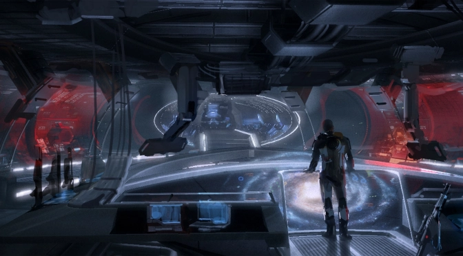
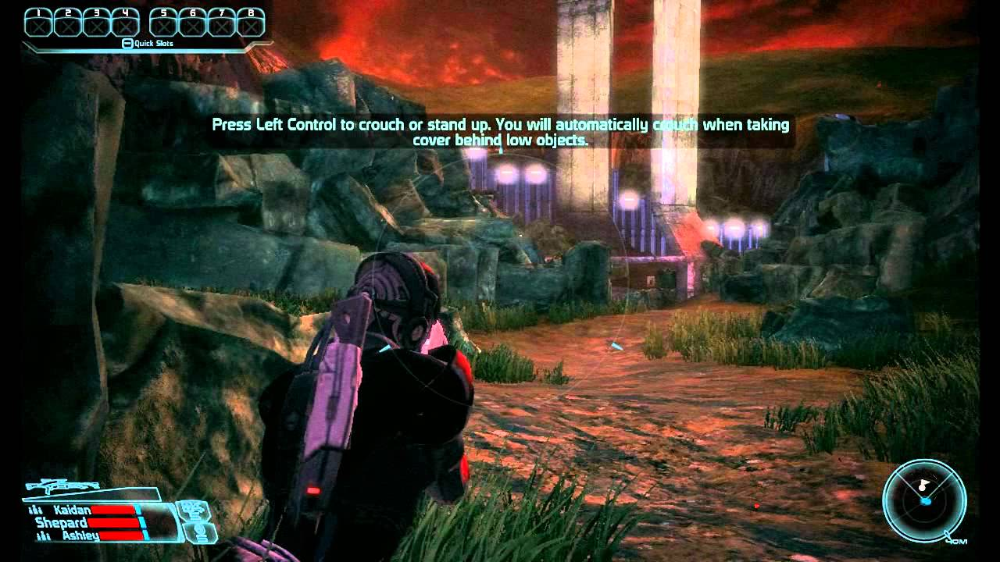

El juego está ambientado en el año 2183, y traslada al jugador a ocupar el lugar del o de la Comandante Shepard, a elección del jugador, quien es un soldado de élite de la flota de la Alianza de Sistemas (una organización que aglutina a todas las antiguas naciones de la Tierra) en una trama que, poco a poco, le involucrará en un complot de dimensiones galácticas. El orden de las misiones principales puede ser alterado por el jugador y así cambiar el orden en el que se desencadenan los acontecimientos de la historia.
La historia de Mass Effect recae principalmente en el género de la ópera espacial y explora temas como la colonización del espacio, la intolerancia, vigilantismo y la Inteligencia Artificial. La historia, con elementos Hombre vs Máquina, ha sido comparada, tanto con las novelas Berseker, de Fred Saberhagen y Battlestar Galactica, así como a las novelas Pórtico de Frederik Pohl. De acuerdo con Casey Hudson, el director del proyecto en Bioware, Aliens, Blade Runner, Star Wars, Final Fantasy: La Fuerza Interior y Star Trek sirvieron de inspiración para el juego.
Mass Effect está situado en el año 2183. Treinta y cinco años antes, la humanidad descubrió un alijo de tecnología construido por una civilización tecnológicamente avanzada pero extinta. Esta raza se denominaba Proteanos. Gracias al estudio y adaptación de esta tecnología la Humanidad ha logrado salir del Sistema Solar y establecer numerosas colonias, además de encontrar a varias especies extraterrestres, todo esto en la Vía Láctea. La utilización de herramientas de tecnología proteana, conocidos como Relés de Masa ha permitido a las diversas especies viajar instantáneamente a través de vastas extensiones de la Galaxia.